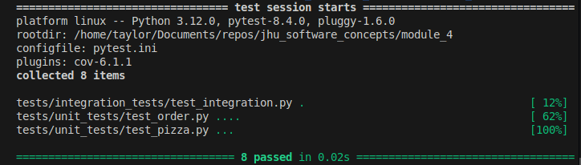
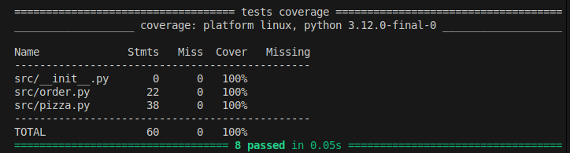
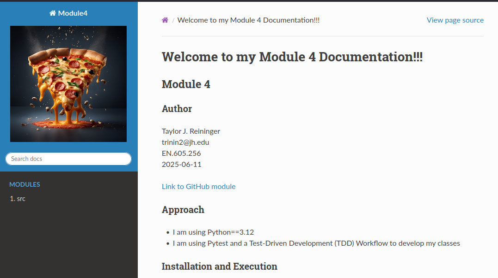

Welcome to my Module 4 Documentation!!!
Module 4
Approach
I am using Python==3.12
I am using Pytest and a Test-Driven Development (TDD) Workflow to develop my classes
Installation and Execution
NOTE: These instructions assume the user either has Anaconda or another method of creating virtual environments already configured.
Follow these steps to configure and execut the tool:
Create your virtual environment (Anaconda or Pyenv)
## Anaconda
# Create new Anaconda environment based on Python 3.12 (enter "y" to continue)
conda create -n mod4 python==3.12
# Activate the newly created environment
conda activate mod4
((OR))
## Pyenv
# Install the latest version of Python 12 for pyenv
pyenv install 3.12.10
# Activate this version of pyenv for use in the next step
pyenv shell 3.12.10
# Create the virtual environment
python -m venv mod4
# Activate the newly created environment
source ./mod4/bin/activate
# Update pip just in case it's on an old version
pip install --upgrade pip
Navigate to the
module_4folder of this repoInstall the dependencies for the app
# Install all the libraries in the requirements file
pip install -r requirements.txt
To run the pytest test suite on our code, run the following:
# Run all tests
pytest .
# Run the tests with the "order" mark
pytest -m order
# Run the tests with the "pizza" mark
pytest -m pizza
Example output:

Run code coverage report
# Creates a coverage report for the folder "src"
pytest --cov-report term-missing --cov=src
Example output:

To run the Sphinx documentation process
# Navigate to the documentation folder
cd docs
# Run the auto-documentation step
sphinx-apidoc -o ./source ../src/
# Clean and build the HTML
make clean
make html
To open the documentation, open the
index.htmlfile indocs/build/html
Sample HTML
